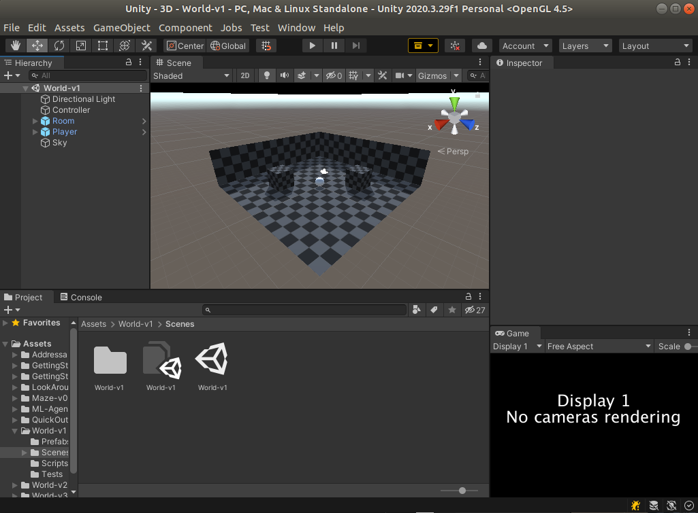

Quick Start
Clone the github repository:
git clone https://github.com/BenedictWilkins/world-of-bugs.git
While in the same directory, install with:
python -m pip install world-of-bugs
From here there are two options: use a standalone build, or use the unity editor. If you want to use the unity editor, skip to the next section.
Getting Started With Standalone Builds
Download the latest build for your system here.
Extract the build files to a directory of your choice, for example ~/Downloads/builds/Standalone-Linux-World-v1.
To run with the default build settings:
# add downloaded builds to path
worldofbugs.utils.BuildResolver.path += "~/Downloads/builds/"
print(worldofbugs.utils.BuildResolver.path) # list all search paths
print(worldofbugs.utils.BuildResolver.builds) # list all avaliable environments
# make the environment
env = worldofbugs.make('WOB/World-v1')
env.reset()
for i in range(1000): # advance simulation 1000 steps
env.step(env.action_space.sample()) # take a random action
env.render() #render the game screen, requires pygame installation
If everything worked correctly you should see a build printout like:
[~/Downloads/builds/Standalone-Linux-World-v1/World-v1.x86_64]
and if you have pygame installed (pip install pygame) something like the following should appear in your pygame window.

You may also notice that a small Unity window popped up, unfortunately this is required to ensure the agent's observations are correctly rendered, see here for details.
Build Search
When searching for builds the BuildResolver will search one directory deep. The typical directory structure should look something like the following:
builds
└── World-v1
├── LinuxPlayer_s.debug
├── UnityPlayer_s.debug
├── UnityPlayer.so
├── World-v1_Data
└── World-v1.x86_64
builds being the directory added to BuildResolver.path as above. By default the current working directory and the build directory in the worldofbugs install directory will also be searched.
Getting Started with Unity
Failure
WOB is now available as a unity package and should be used as such. These instructions will be updated shortly.
Rather than using a standalone build, it is also possible to connect directly to the Unity editor. This requires the WOB project to be open in unity.
To avoid issues, install Unity version 2020.3.25f1 which can be found in the unity download archive using the latest version of UnityHub.
Once installed, locate the UnityProject folder in your worldofbugs install directory, add it as a new project in UnityHub and open it in the editor.

To connect to the editor, run the following script and then press the play button in the editor window.
import worldofbugs
# make the environment, None indicates we want to connect to the editor
env = worldofbugs.make(None)
env.reset()
for i in range(1000): # advance simulation 1000 steps
env.step(env.action_space.sample()) # take a random action, this will happen in the editor
You should see the agent (white sphere) start to move around the level in the scene view, or a message like the one below in the game view.

By default, the game view is not rendered as no cameras are in use. To look through the eyes of the agent, in the Unity editor go to Window -> Preview -> RenderTextureCameraPreview.

The game view can be safely closed in favour of this new view.